ARES is a map of a real place on Mars that you walk through as a game. You are an astronaut on foot in Jezero Crater with one tank of oxygen. A stranded companion, ARES, needs three pieces of his ship. Every tile of the board comes from NASA data: how steep it is, whether it is rock or loose sand, how high it is, what it looks like from orbit, and where the Perseverance rover really drove. A route planner draws the cheapest and safest walk. You can follow it, or leave it and pay in oxygen and risk. In fifteen minutes a player learns to read slope and thermal maps the way mission planners do, and sees in numbers what a planned route is worth.
3NASA data types layered on one board: topographic, thermal, optical
1,600tiles of 40 m, each with real slope, softness and height
−14.6%oxygen on the planned route against the shortest one, at the rover's landing site, for the same distance
0 of 93tiles of the real rover's track that our map marks as too steep
The walk. The green line is the planned route; the white dots are Perseverance's real track.The same ground as a slope map, from NASA's 1 m terrain model.
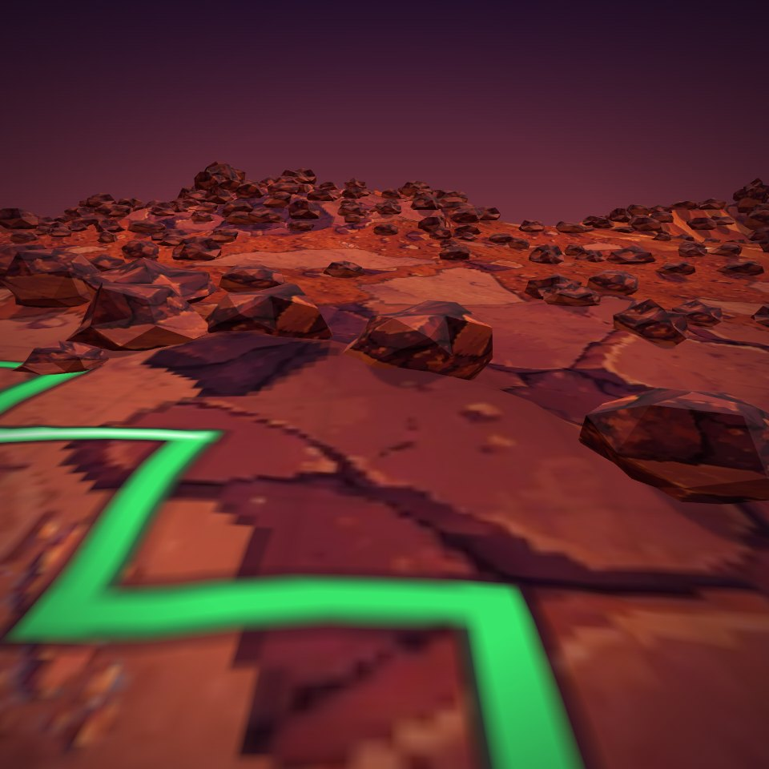
The same ground in 3D, seen through the visor.
Contents
1 The problem, and who it is for
2 What we built: every feature
3 How it answers the challenge
4 The NASA data, source by source
5 The data pipeline, step by step
6 The model: cost, risk and oxygen
7 Route planning
8 ARES, the companion that answers from data
9 How the game is built
10 Validation and testing
11 Impact: results site by site
12 What is not data, and the limits
13 How the team worked, and the use of AI
14 What comes next
15 Technology, repository, how to run it
16 Data, references and credits
1 · The problem, and who it is for
The first people to walk on Mars will do it with a fixed amount of air. On foot, in a heavy suit, a slope or a patch of loose sand is not an inconvenience. It costs oxygen, and it can end the walk. The shortest line between two points on a picture of the ground says nothing about either.
The data that does say it already exists. NASA has mapped Jezero Crater from orbit down to one metre per pixel, measured how fast its ground cools at night, and driven a rover across it. But the existing tools, such as Mars Trek and the USGS geologic maps, are regional viewers made for specialists. The challenge names the gap: a hyper-local, layered view of one route that an astronaut could actually use.
Our question: can one small piece of Mars be turned into something anyone can read well enough to choose a route that keeps them alive?
Who it is for, and what each gets
For whom
What they get from it
What in the project is made for them
Children and school students from about age 10
A first meeting with real space data, as play. They learn that a map can show more than a picture: how steep the ground is, and whether it is rock or sand, and that these decide whether you get home.
A story with a character to help. One rule to start with: follow the green line. Short sentences, big buttons, touch controls, no reading of numbers needed on EASY. ARES explains the ground in plain words as you step on it.
Older students and the public
The actual skill: reading a slope map and a thermal map to plan a traverse, with the same data products a mission team uses.
The five switchable layers, HARD level with no route, the ship computer with the measured ground data, and the rover's real track to compare against.
Teachers, museums, outreach teams
A ready activity of about fifteen minutes that needs no preparation.
Runs in any browser, on a phone, with nothing to install and no account. A "How it works" page with the sources and the formula.
People designing astronaut-facing maps
A working example of the whole chain.
How to turn orbital products into one hazard number per step, how to check it against a real traverse, and how to show it to someone who is not a geologist.
The first row is the one the look of the project is built around: pixel art, a companion, a rescue. The data underneath is the same for every row. A child and a graduate student walk the same ground with the same numbers; they just use different amounts of what is on the screen.
2 · What we built: every feature
Everything below works now, in the public build. Nothing in this section is a mock-up or a plan.
Feature
What it does
The board
A 1.60 km × 1.52 km window of Jezero Crater centred on Perseverance's landing site (18.4447° N, 77.4508° E), as 40 × 40 tiles of 40 m. Each tile carries a real slope, ground softness and elevation.
The walk
Move tile by tile (arrows, WASD, or touch). Each step burns oxygen according to the ground. Tiles steeper than 15° are walls. Dangerous tiles carry a chance of an accident. Recover three ship pieces and return before the tank is empty.
Five map layers
MAP (game art), PHOTO (the real HiRISE image), HEIGHT, SLOPE and HEAT. Switch at any moment with keys 1 to 5 or the buttons; the route and the pieces stay drawn on top.
The planned route
A green line from the wreck through all three pieces and back, found by A* over the real terrain (section 7). Press SPACE and ARES leads you along it.
The real rover
Perseverance's actual drive is drawn as white dots (816 points, sols 14 to 386), with the rover parked where it landed.
Real photos
At the rover's site each piece lies at a real rover stop; reaching it shows the Navcam photo Perseverance took there, with sol and date. At unvisited sites it shows NASA's HiRISE close-up of that exact tile.
Four landing sites
The rover's own site, and three sites on ground no rover has reached, chosen by a screening tool (section 5).
Three levels
EASY: route shown, generous tank. NORMAL: route shown, tight tank, pieces move each run at the rover's site. HARD: no route; you read SLOPE and HEAT and plan it yourself.
ARES
A companion who answers questions about the ground, the route, the data and the mission. He computes or retrieves every answer and names its source. He has no language model and refuses what he does not know (section 8).
2D and 3D
One key switches between the top-down map and a 3D terrain built from the same height data, with third-person and first-person cameras.
Labels on the map
Named labels beside the route, the rover track, pieces, air tanks and the wreck, placed so that none covers another.
Ship computer
At the wreck, a retro desktop with four folders: every NASA image of the site, the four orbital maps, ground data measured live from the layers, and the log of this walk.
Live impact panel
For every walk the side panel shows what the planned route saves against the shortest one: oxygen, dangerous tiles crossed, and accident odds. The numbers are computed for that walk, not typed in.
Debrief and score
At the end: which path you took, oxygen left, distance, steepest slope crossed, jumps off the route, score, and best score per level.
Menu and settings
Main menu (Play, How it works, Watch the intro, The story, Settings, Data & credits). Settings are remembered: sound, full screen, start in 3D, labels, rover track, reset.
Opening story
A 35-second animated sequence drawn by code, timed to its music, then a 26-second walk-through of the game recorded from the game itself. Both can be skipped.
Phones and tablets
Held upright, the map sits on top with touch buttons under it. Menus and the ship computer fill the screen.
Loader
A power bar that fills as each data file and image arrives, so a slow connection shows progress instead of a blank page.
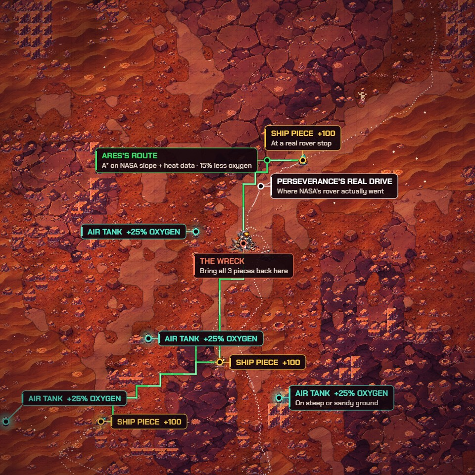
Whole-map briefing with labels. The placement code keeps every label clear of the others.
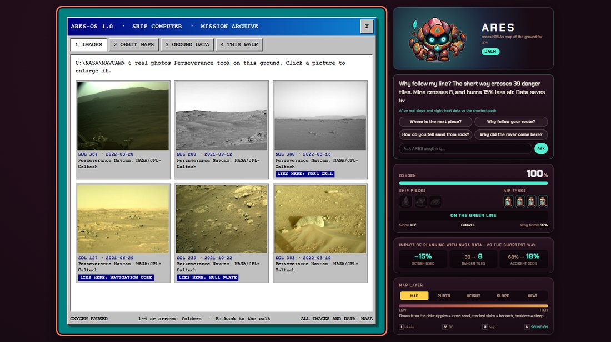
The ship computer: six real Navcam photos of this site, each marked with the piece that lies there.
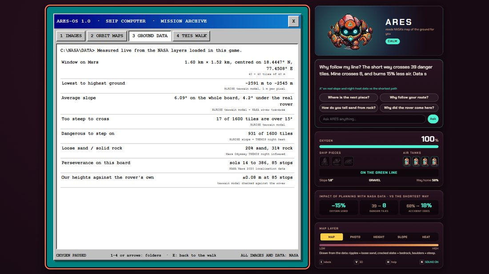
Its GROUND DATA folder: values measured live from the NASA layers in the browser.
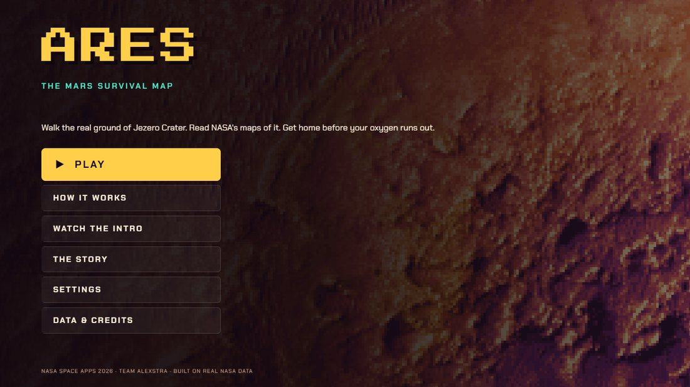
Main menu, over NASA's own image of the crater.
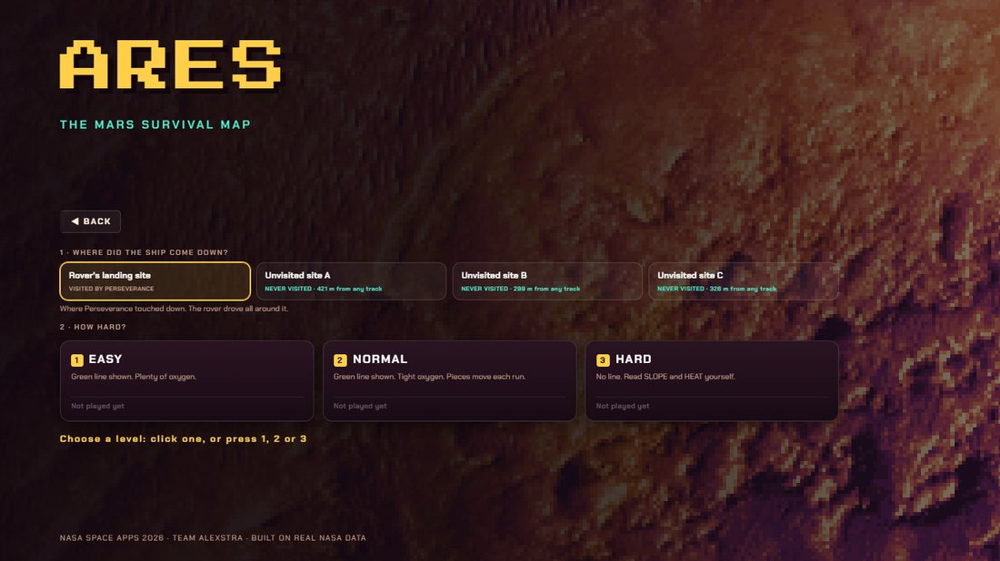
Choosing a landing site and a level.3D, third person.
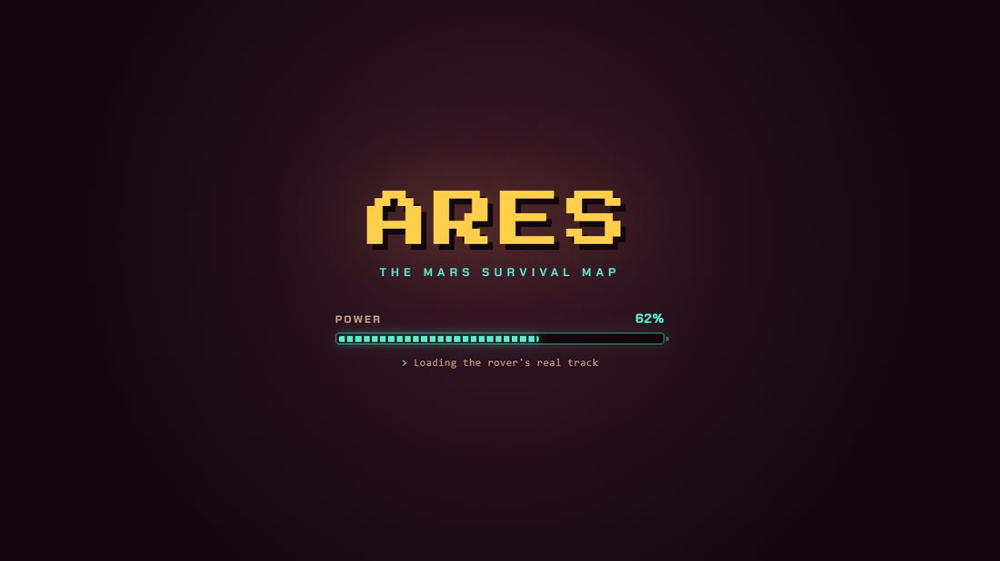
The loader.
3 · How it answers the challenge
The challenge asks for a layered, integrated, hyper-local view of a location or route, combining data from several NASA missions, that an astronaut could use on a surface excursion. This table goes through its objectives and optional considerations one by one.
The challenge asks for
Done
What we did
A location and goals
Yes
Jezero Crater, the area around Perseverance's landing site. The targets of each walk at that site are real places where the rover stopped and took a photograph.
At least three types of data, layered
Yes
Topographic (HiRISE terrain model, 1 m), thermal (THEMIS night infrared), optical (HiRISE orthoimage, 25 cm). Plus two kinds of ground truth: the rover's localisation track and its Navcam images. All five are aligned on one board and can be switched in place.
Data from more than one mission
Yes
Mars Reconnaissance Orbiter (HiRISE), Mars Odyssey (THEMIS), Mars 2020 Perseverance (localisation, Navcam).
Safety first: terrain hazards
Yes
Slope walls over 15°, a per-tile accident risk from slope and loose sand, and a warning each time the player steps onto bad ground, with the slope and surface named.
Safety first: suit mobility
Yes
The 15° limit and the oxygen cost of slope and soft ground stand for the limits of a person in a suit. These weights are our own choices and are stated as such (section 12).
Safety first: radiation, space weather
No
Left out on purpose. An early build had a radiation layer that was not backed by a real site-level dataset. We removed it rather than show an invented one.
A route to the targets that avoids obstacles
Yes
A* over the tile grid with a cost made from slope and softness, a tour through all three targets and back, redrawn if the player leaves it. Proven cheapest by an independent check (section 10).
Optional: form factor
Yes
A web app that works on a laptop, a tablet and a phone, with touch controls. A first-person 3D view shows the ground as from a helmet.
Optional: rover point-of-view images
Yes
Six real Navcam frames taken on this board, shown where they were taken, and all six browsable in the ship computer.
Optional: a generator for other places
Partly
The pipeline takes a latitude, longitude and window size. Any window inside the Jezero HiRISE mosaic rebuilds with three commands. Another region needs that region's terrain model address. We built and tested one window.
Optional: time frame
Yes
Timeless products (topography, thermal behaviour of the ground), plus a dated record of where the rover was on each sol.
On the resources listed with the challenge. We used JPL Mars Trek (imagery and thermal tiles) and the Perseverance raw image archive. NASA Worldview covers Earth only and does not apply. The USGS geologic maps and the Curiosity route example informed the design but are not loaded as data.
4 · The NASA data, source by source
Dataset
Mission · provider
Resolution
What it becomes in the game
HiRISE Digital Terrain Model of Jezero JEZ_hirise_soc_006_DTM_ MOLAtopography_DeltaGeoid_ 1m_Eqc_latTs0_lon0_blend40
Slope of every tile, walls, elevation, the HEIGHT and SLOPE layers, the hillshade, craters and ledges in the art, and the mesh of the 3D view.
THEMIS Night IR controlled mosaic THEMIS_NightIR_ ControlledMosaics_100m_v2
Mars Odyssey · Arizona State University, through JPL Mars Trek
100 m per pixel
Ground softness: ground that is dark (cold) at night has low thermal inertia, which means loose sand or dust; bright ground is rock. Drives oxygen cost, risk, the HEAT layer and which texture is painted.
HiRISE orthomosaic of Jezero JEZ_hirise_soc_006_ orthoMosaic_25cm
Mars Reconnaissance Orbiter · University of Arizona, through JPL Mars Trek
25 cm per pixel
The PHOTO layer, the colours of the board, the menu background, and the close-up shown at each piece on unvisited ground (160 m squares).
Mars 2020 localisation M20_waypoints.json, M20_traverse.json
Perseverance · NASA/JPL-Caltech
per drive
The rover's real path on the board, the stops used as targets, the definition of "unvisited" ground, and the whole validation in section 10.
Mars 2020 raw images, Navcam
Perseverance · NASA/JPL-Caltech
per frame
The photograph shown at each rover stop, with its sol, date and NASA image identifier.
How NASA data contributes, in one sentence each
Without the terrain model there is no game. It is the source of every wall, every slope cost and the whole 3D view.
Without THEMIS the route would cross sand. Slope alone cannot tell a flat dune field from flat bedrock; the night-time temperature can.
Without the rover's track we could not claim the map is right. It is the only independent ground truth available, and we use it as a test, not as decoration.
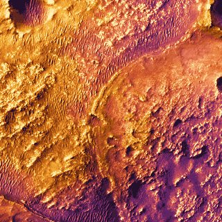
PHOTO: HiRISE orthoimage of the window, reduced to the board's grid.HEIGHT: terrain model, with contours.
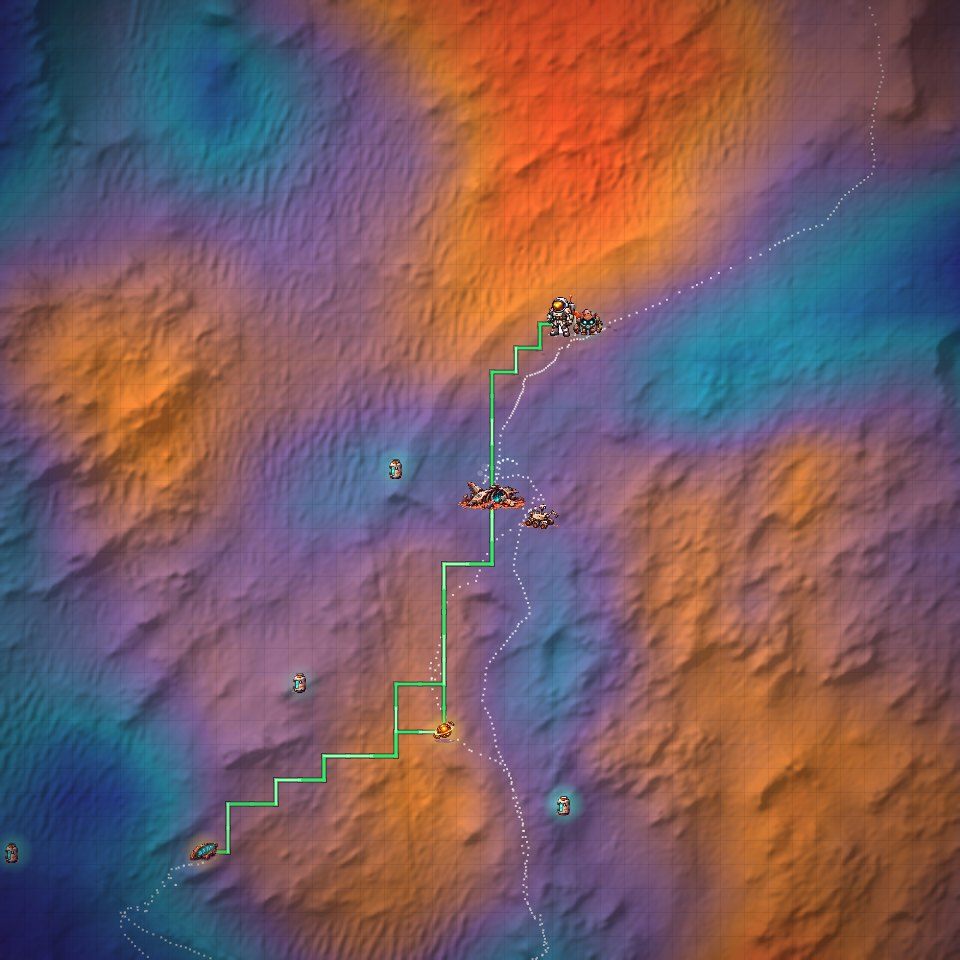
HEAT: THEMIS night infrared.
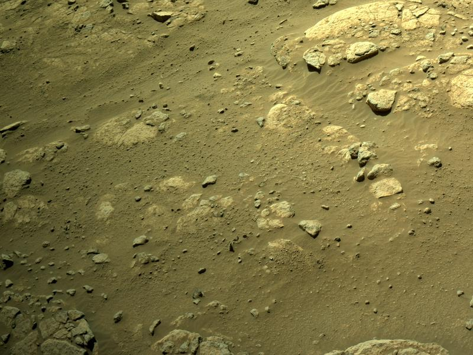
A real Navcam frame from sol 239, shown at the tile where it was taken. NASA/JPL-Caltech.
5 · The data pipeline, step by step
Eight Python scripts in tools/ (758 lines) turn NASA's products into the files the game loads. They ran at build time; their outputs are committed, so the game needs no server. The whole board can be rebuilt from NASA's servers with three commands.
1 · FetchRead only our window of the 1 m terrain model by HTTP range requests.
2 · MeasureSlope from the heights. Softness from THEMIS. One value per tile.
3 · Ground truthClip the rover's track to the board. Pick stops and their photos.
4 · SitesFind ground no rover reached. Screen it like a landing site.
5 · PackWrite JSON, map images and a binary heightmap for the browser.
Step 1 — the terrain window (fetch_dem_window.py, 133 lines)
The terrain model is one very large GeoTIFF. On the advice of a faculty member at the university that the data can be used without downloading it whole, we built the tool that way: it reads the file's header, works out which strips cover our window, and requests only those byte ranges over HTTP, six in parallel, with retries.
Window: 1,600 m north to south. Because the projection stretches east–west distances away from the equator, the same 1,600 projected metres are 1,517.8 m on the ground at 18.44° N. We keep both numbers and use the ground distance.
Output: a 400 × 400 grid of heights at 4 m spacing, and a slope grid.
A correction we had to make: slope is the gradient of height over distance. In this projection a pixel is narrower on the ground east–west than north–south, so the east–west gradient is divided by cos(latitude). Without it every east- or west-facing slope came out too gentle.
Step 2 — one number per tile (build_tiles.py, 122 lines; build_layers.py, 100 lines)
Each 40 m tile holds a 10 × 10 block of 4 m cells. Its slope is the 90th percentile of those hundred slopes, not the average: a tile that is flat except for one ledge still has a ledge you must cross.
Softness = 1 − THEMIS night brightness, normalised inside the window (0 = the warmest, rockiest tile; 1 = the coldest, sandiest). It is a relative measure, not a calibrated temperature.
Elevation = the mean height of the tile. The board spans −2,591 m to −2,545 m: 46 m of real relief.
Map tiles for THEMIS and HiRISE imagery come from the Mars Trek tile service; the script computes which tiles cover the window at each zoom level and fetches only those.
Outputs: board.json (1,600 values each of slope, softness, elevation), the PHOTO image, three clean data maps (hypsometric height with 5 m contours, slope, heat, each shaded by the real relief), and height.bin, a 200 × 200 grid of 16-bit heights for the 3D view.
Step 3 — the rover as ground truth (build_rover.py, 104 lines)
Reads NASA's published localisation for Mars 2020 and converts longitude and latitude to board coordinates.
Keeps the part of the drive that falls on our board: 816 track points, 85 waypoints, sols 14 to 386, crossing 93 of the 1,600 tiles.
For each chosen stop it asks NASA's raw image service for Navcam frames from that site and drive, and keeps one where the mast was looking at the horizon rather than at the rover's own deck (mast elevation between −28° and +6°). Six stops are used.
Computes the statistics in section 10 and writes them into rover.json, so the game shows measured numbers.
"Unvisited" is measured, not judged: a tile is unvisited if it lies more than 200 m from every point of the rover's track. That is 60.8% of the board.
Sites are screened the way real landing sites are: slope under 5°, firm ground, room around them, and reachable from the pieces. Three were chosen (table).
Each site gets three pieces on unvisited ground of different kinds (solid rock, gravel, high ground), and a 160 m HiRISE close-up of each piece's tile at the mosaic's finest zoom.
Site
Ground under it
Nearest rover track
Board position
Octavia E. Butler Landing
the rover's own landing site
0 m
tile (20, 20)
Unvisited site A — north, middle ground
3.8° slope, firm
421 m
tile (16, 6)
Unvisited site B — west, high ground
2.9° slope, firm
299 m
tile (11, 22)
Unvisited site C — north-west, high ground
3.1° slope, firm
326 m
tile (13, 14)
Step 5 — art preparation (slice_sheet.py, slice_textures.py, mark_ai_art.py; 211 lines)
Cuts generated character sheets into clean sprite atlases: removes the background by flood fill from the border, finds each pose, drops stray bits, anchors every frame at the feet. 7 animations for the astronaut, 9 for ARES.
Makes six ground textures tile without a visible seam, by cross-fading each with a half-offset copy of itself.
Marks every AI image: a banner on each source sheet, a text record inside each of 51 PNG files, and removal of a NASA wordmark and flag the generator had drawn.
6 · The model: cost, risk and oxygen
One small model turns the data into consequences. It is the same model for the planner, for the oxygen gauge and for the warnings, so the route ARES draws is cheapest in exactly the currency the player pays in.
Flat, firm ground costs 40: one tile's length. The worst passable tile (15°, pure sand) costs 40 × 4.1 = 164.
Slope is squared because effort on a slope grows faster than the angle.
Above 15° a tile cannot be entered. 17 of 1,600 tiles are walls; the steepest is 19.6°.
Risk of an accident on a step
r = 0.004 + 0.06 × (slope / 15°)² + 0.02 × softness (treated as 0 when below 0.02)
Easy ground is never fatal. From 2% the risk is real, up to 8% on the worst passable tile. 931 tiles carry some risk, 652 are safe, 17 are walls.
The accident odds for a whole path are 1 − ∏(1 − r) over its steps. This is the figure shown in the impact panel.
Oxygen
Rule
Value
Tank size
The cost of the cheapest possible tour for that walk × a margin: 1.7 on EASY, 1.4 on NORMAL, 1.5 on HARD. So the tank always fits the walk, and a tight level is tight for a reason.
Walking
Each step burns its cost.
Leaving the route (EASY, NORMAL)
Steps off the green line burn 40% more, and the tile's accident risk applies.
Standing still
Life support alone empties a full tank in 12 minutes.
Spare tanks
Four on the board, each refilling 25%. They lie on steep or sandy ground, so taking one is a decision.
Ship computer open
Oxygen is paused.
Score
home: ( pieces × 100 + share of oxygen left × 300 + air tanks collected × 30 ) × level bonus (1, 1.5, 2.5) · not home: pieces × 50
What in this model is ours. The slope and softness values are NASA's. The 15° limit, the weights 2.5 and 0.6, the risk numbers, the tank and the score are design choices made by the team so that the data has consequences a player can feel. They are not NASA figures, and the game says so on its "How it works" page.
7 · Route planning
Algorithm. A* on the tile grid, four directions, in game/astar.js (91 lines, written for this project, no library).
Open set. A binary min-heap keyed by f = g + h.
Heuristic. Remaining Manhattan distance × 40 m × the cheapest possible multiplier. It never overestimates, so the path returned is the cheapest one that exists.
The tour. A walk visits three pieces and returns. The planner computes every leg with A*, caches them, and tries all 3! = 6 orders, keeping the cheapest total.
Replanning. If the player steps off the line and rejoins it somewhere else, the route is recomputed from where they stand.
The comparison route. For the impact panel the same planner is run with every step costing the same. That is the shortest way a person would draw on a photo.
Spoken directions. When asked the way, ARES does not point along a straight line. He reads the turns off the real path: "5 up, then 1 right, then 1 up, then 1 right, then 2 more turns. 12 jumps in all." Following them word for word reaches the target; we tested this by completing HARD using only his directions.
8 · ARES, the companion that answers from data
ARES is how a player asks the map a question. The team set one rule for him: he may speak only from NASA data and the mission, he must name his source, and he must not guess. So there is no language model inside the game. Every answer is either computed or looked up. The code is game/ares.js (69 lines) and the answer logic in game/main.js.
A question passes through four stages, in order:
Stage
What it does
A real answer from the game
1 · Navigation
Runs A* from the player's tile and reads the turns off the path. Adds the oxygen it will cost and what the target lies on.
"Where is the next piece?" — Fuel cell: 5 up, then 1 right, then 1 up, then 1 right, then 2 more turns. 12 jumps in all. It costs 9% air. It lies on gravel, where the rover stopped on sol 380.
2 · State
Oxygen against the cheapest way to finish from here; the slope, surface, height and risk of the tile underfoot and its four neighbours.
"Is it safe around me?" — You stand on 1.8° gravel, at −2570 m. up: 2° gravel, safe. down: 3° gravel, safe. left: 4° gravel, safe. right: 2° gravel, safe.
3 · Measurement
Measures the whole board live: steepest and flattest tile, highest and lowest ground, share of sand and rock, number of walls and dangerous tiles, how far the rover drove.
"Where is the steepest ground?" — The steepest tile is 19.6°, 1103 m to the north-west. It is a rock wall: nobody crosses that.
4 · Retrieval
Searches a written knowledge base of 24 entries (897 words) about Jezero, the instruments, the planner and the mission, and fills in this board's live numbers.
"How do you tell sand from rock?" — The HEAT layer comes from THEMIS, an infrared camera on NASA's Mars Odyssey orbiter. After sunset, loose sand goes cold quickly while solid rock stays warm...
Otherwise
Refuses.
"Who is the president?" — I do not have that in the data I carry, so I will not guess. Ask me about this ground: the slopes, the heat, the heights, the rover, or the way to go.
How the retrieval works
Ranking. BM25 (k1 = 1.2, b = 0.75), implemented in the project. Each entry is indexed by its title, tags (counted twice) and text, after removing common words and plural endings.
Threshold. A match scoring under 1.1 is not accepted.
Subject check. Question-shaping words (who, why, tell, explain...) are not allowed to carry a match on their own. At least half of the subject words of the question must occur in the entry, and a question whose subject words are unknown to the whole knowledge base is refused. This fixed a real fault we found in testing: "who is the president" used to be answered with ARES's own introduction because both contain "who".
Follow-up questions. After each answer ARES offers the questions whose entries share the most topic words with it.
Sources. Every answer is shown with its source line, for example "HiRISE terrain model, steepest part of each 40 m tile".
What this is and is not. It is retrieval plus tools. It is not a chatbot and not generation: ARES cannot say anything that is not computed from the layers or written in the knowledge base. We chose that on purpose, because on a survival map a confident wrong answer is worse than no answer.
9 · How the game is built
The game is a static web page: HTML, JavaScript modules and two canvases. There is no build step, no framework, no server and no account. About 1,600 lines of JavaScript in seven modules, 360 lines of HTML and CSS, and one library (three.js, for 3D).
Module
Lines
Responsibility
main.js
947
Game state and loop; movement, oxygen, accidents, pickups; drawing the 2D view and the overlays; labels; ARES's answer logic; ship computer; menu and settings; touch; intro flow; loader.
astar.js
91
Cost and risk functions, binary heap, A*, tour planner.
ares.js
69
BM25 index and search, subject check, related questions, turning a path into spoken turns.
tiles.js
117
Paints the board from data: picks a texture per tile from its slope and softness, blends borders, adds relief shading from the heights, craters where the terrain model has hollows, ledges and rocks on steep tiles.
view3d.js
129
The 3D view: terrain mesh from height.bin, the painted board as its texture, lit rocks as instanced meshes, characters as billboards, two cameras, projecting map positions to the screen for labels.
cine.js
164
The opening story: six beats, camera moves, particles, timed sound cues.
audio.js
97
All sound effects and the in-game music, synthesised in the browser with the Web Audio API.
2D rendering
The board is painted once into an off-screen canvas, then drawn each frame with the camera either following the astronaut (15 tiles across) or showing the whole map.
The art is chosen by the data, not placed by hand: sand ripples where THEMIS reads cold, cracked slabs where it reads warm, boulders and ledges where the terrain model is steep.
On top: the route, the rover track, pieces and tanks, the characters with animation, dust puffs, a tile flash on landing, a screen shake scaled to the risk of the tile, and a red frame as oxygen runs low.
3D rendering
A 200 × 200 mesh (8 m posts) from the real heights, exaggerated 3.5× so that 46 m of relief reads on screen. The rules, route and oxygen are unchanged; only the camera differs.
Route, labels and markers are drawn on a transparent layer draped over the mesh, so they follow the ground.
First person hides the astronaut and looks ahead along the direction of travel.
Labels that never overlap
Each label tries 32 positions around its anchor (8 directions at 4 distances) and takes the first that is inside the frame, clear of every label already placed, clear of every other marker, and clear of the astronaut and ARES.
A label keeps its place from frame to frame while that place stays free, so labels do not jump. If no place is free it is not drawn.
Labels grow on small screens, where the canvas is shown at a fraction of its size.
Sound and the opening story
Effects are synthesised: landing sounds differ for sand, rock and gravel; alarms, the tank refill, ARES's voice tones.
The story is scored with a recorded track. We measured the track's loudness over time, found its entry, its fall and its return, cut it to the picture, and moved the beats of the animation onto the beats of the music: the engine blows at 6.0 s as the music comes in, the impact lands at 15.5 s as it falls away, the title appears at 30.4 s as it returns.
Loading and size
We measured the first build as too heavy for a shared connection and reduced it: the site from 34 MB to 14 MB, and what must arrive before play from about 9 MB to 2.8 MB (256-colour art, re-encoded video).
The walk-through video downloads while the story plays, so it starts without a wait.
A loader shows real progress: it advances as each file arrives.
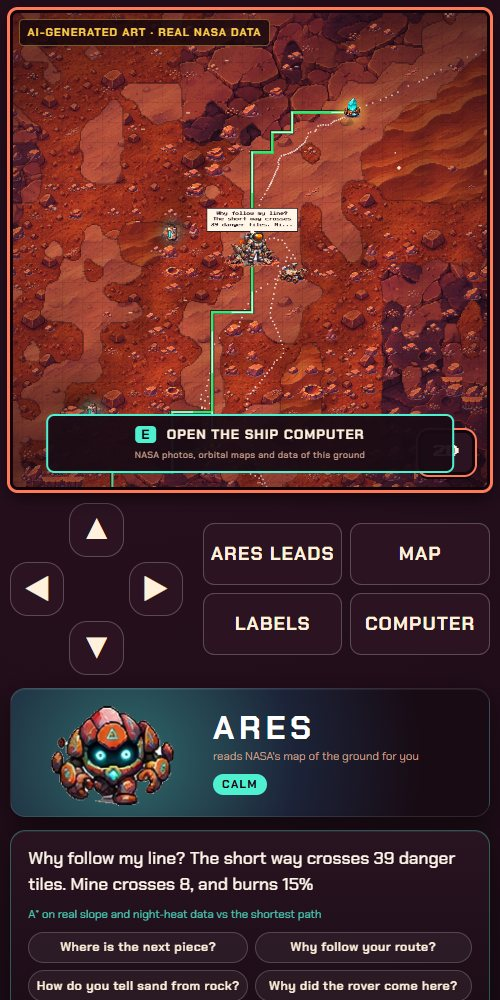
Phone layout: map, touch controls, then ARES's panel.
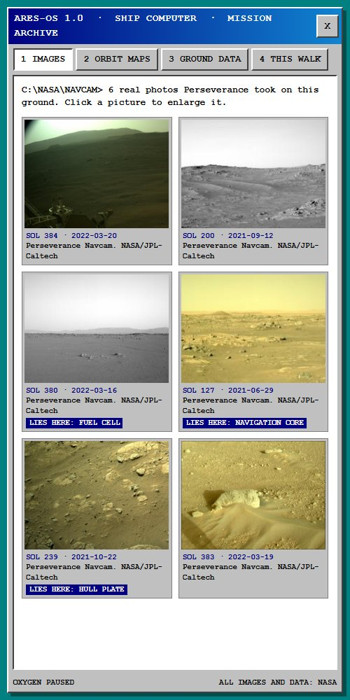
Ship computer on a phone.
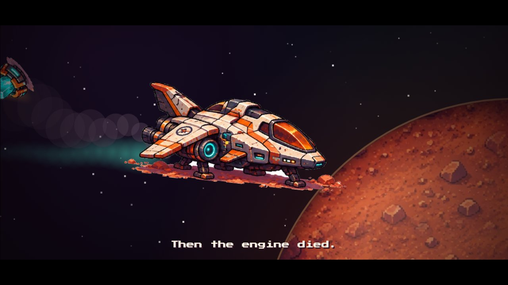
Opening story: the engine fails and a piece tears away.
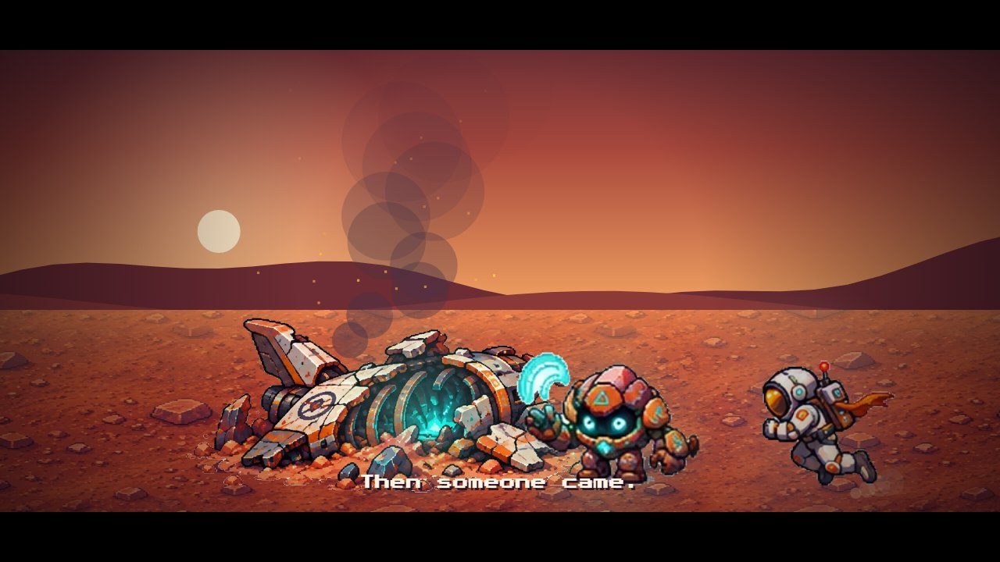
Opening story: someone arrives.
10 · Validation and testing
A map that decides whether a walk is safe has to be checked against something that is not itself. We ran five kinds of checks.
10.1 The map against the real rover
Perseverance's drivers chose its route with NASA's own hazard analysis. If our tiles mean anything, the rover's track should sit on ground our map calls gentle. build_rover.py measures it, and we recomputed the same figures independently in the browser from the raw layers.
Check
Under the rover (93 tiles)
Whole board (1,600 tiles)
Average slope
4.2°
6.1°
Tiles steeper than 10°
5.4%
10.1%
Tiles over our 15° limit
0
17
Steepest tile
13.4°
19.6°
Tiles on loose sand
16.1%
20.2%
Our heights against the rover's own recorded elevations, at 85 stops
mean difference −0.01 m, spread ±0.08 m
The real mission drove on the ground our map prefers, never crossed a tile we call a wall, and our heights agree with the rover's to within eight centimetres.
10.2 The planner against an independent solver
To prove the green line is the cheapest tour and not merely a plausible one, we wrote a separate Dijkstra search and a brute-force search over all orders of the three pieces, and compared totals on two sites.
Site
Game's route cost
Independent best
Walls on route
Rover's landing site
4,423.57
4,423.57
0
Unvisited site B
2,691.46
2,691.46
0
10.3 Our data against NASA's server today
We downloaded NASA's current Mars 2020 waypoint file (708 waypoints) and looked up the six stops the game uses by their site and drive numbers. All six were found, each with the same sol the game shows (sols 127, 200, 239, 380, 383, 384).
10.4 Playing every case to the end
Case
Result
4 sites × EASY and NORMAL, following the route
All 8 walks finish with all pieces home (78, 126, 44, 44, 40, 40, 50, 50 steps), three photos shown on each.
The walk ends at 0% with the "oxygen ran out" debrief.
Controls
Five layers, whole-map view, 2D/3D, both cameras, rover track, route, labels, help, sound: all toggle and restore.
Ship computer
Four folders; 6 photos, 4 maps, 8 data rows, 5 log rows load; viewer opens and closes; oxygen stays paused while open.
Settings
Each setting is saved, applied to the next walk, and restored; reset clears best scores and keeps settings.
Touch controls
Move, map, route-follow and computer buttons act as their keys.
10.5 ARES
29 questions about the data and the mission, including all 24 that ARES himself suggests: every one answered, every answer with a source.
8 off-topic questions (a president, a currency, a joke, a poem, the weather...): every one refused.
5 ways of asking about the ground underfoot: every one answered from the player's own tile.
10.6 The published site
All 101 files of the site load, with the right file types; the 15 NASA images (6 Navcam, 9 orbital close-ups) load; both videos and the music play; no errors in the browser console.
The same build was deployed to a second host and passed the same checks.
Layouts were checked in screenshots at desktop (1366 × 768), tablet (820 × 1180) and phone (500 × 1000) sizes.
What we did not test. The checks above were run in desktop browsers, including at phone and tablet sizes. We did not run a formal test on a range of real phones, and we have not yet put the game in front of children or a class to measure what they learn. The game is in English only. All three are in section 14.
11 · Impact: results site by site
For every walk the game runs the planner twice: once with the real cost, once treating all ground as equal, which gives the shortest way. It then compares the two under the same model. These are the figures for the four sites on EASY.
Site
Distance, both routes
Oxygen saved
Dangerous tiles crossed
Accident odds for the walk
Steepest tile on the planned route
Rover's landing site
3,120 m
14.6%
39 → 8
68% → 18%
8.2°
Unvisited site A
1,760 m
3.4%
22 → 15
40% → 28%
6.4°
Unvisited site B
1,600 m
9.3%
26 → 25
57% → 48%
13.0°
Unvisited site C
2,000 m
4.2%
29 → 30
54% → 50%
9.9°
What these numbers say
The planned route is no longer than the shortest one. On a grid there are many paths of the same length between two points. The planner picks, among them and beyond them, the one over the best ground. At the rover's site that choice alone is worth 14.6% of the oxygen and takes the accident odds from 68% to 18%, for the same 3,120 m.
The benefit depends on the terrain. Where the ground between targets is uniformly rough, as around site C, there is less to gain, and the cheapest route even crosses one more risky tile than the shortest one because it trades it for lower cost elsewhere. We report that as it is.
These are results inside our model. The slopes and the sand are measured. The oxygen and the odds follow from weights we chose (section 6). The honest claim is not "15% of an astronaut's oxygen" but "the same distance can cost very differently, and the data tells you which way is which".
Why it matters
For learning. A player who finishes HARD has read a slope map and a thermal map to plan a traverse. That is a real skill from planetary science, reached without a lecture.
For trust in data. The game does not ask to be believed. It shows the rover's track on the same map and lets the player see that the real mission went where the data says to go.
For reuse. The method is general: a terrain model, a thermal mosaic, a cost per step, a check against a real traverse. Any place on Mars with a terrain model can be the next board.
12 · What is not data, and the limits
The team's rule for this project was that nothing should be shown as real that is not. This is the full list of what is ours rather than NASA's, and of what the project cannot do.
Item
Status
The story: ARES, the ship, its three pieces
Fiction, as a reason to walk. The places the pieces lie at are real.
15° limit; weights 2.5 and 0.6
Our choices. NASA says Perseverance can tilt far more; a person in a suit is less stable, so we set a stricter line. It is not a NASA figure.
Accident probabilities, tank size, idle drain, score
Game design.
THEMIS as "softness"
A relative reading inside this window, not a calibrated temperature or a measured grain size.
THEMIS resolution
100 m pixels against 40 m tiles: sand and rock boundaries are approximate. On unvisited tiles the HiRISE close-ups show sand ripples on ground THEMIS reads as rock. The game says so in the caption of those images.
Unvisited sites
Planned from orbit alone, which is what a first crew would have. There is no rover track there to check the route against.
Radiation, dust, weather, time of day
Not modelled.
3D relief
Exaggerated 3.5× for legibility. Stated in the README.
Characters, textures, rocks, objects
AI-generated art, labelled on screen. The ground they are painted on is chosen by the data.
The dust devil on the map
Decoration.
13 · How the team worked, and the use of AI
What the team did
The idea. We began with a plan for a map viewer comparing two sites. During the hackathon the team changed it to a game with a companion: a survival walk on one site, because a consequence teaches more than a legend.
The design. The rules, the levels, the oxygen, the choice of Jezero, the idea of landing sites on ground no rover has reached, the ship computer as "the hard drive" holding NASA's images, the main menu and settings, the opening story.
The decisions about truth. Use the data the challenge provides, and stream it rather than download it whole. Remove the radiation layer because nothing real backed it. Remove an early fog-of-war mechanic because a real crew would already have the orbital data. Require that ARES give directions from the real path after the team found his first directions were wrong. Require that he answer only from NASA data and the mission.
Direction through play. Every build was played by the team, and the next changes came from that: the first sidebar was rejected as dull, a framed version as cheap; numbered markers were tried and replaced by labels; the first data layers were rejected and rebuilt as clean maps; the first score music did not fit and was replaced, then cut to the picture.
Art direction. The look of the astronaut and of ARES, the textures, the name, the tagline.
Testing. The team asked for, and reviewed, the checks in section 10.
Where AI was used
The Space Apps rules allow AI tools and ask that their use be declared. This is ours in full.
Part
AI used?
How, and how it is marked
Idea and design
No
The team's.
Code
Yes
Written with an AI coding assistant (Claude, by Anthropic) to the team's design, then tested and corrected by the team build by build. Declared in the README, in AI_DISCLOSURE.md, and in a comment and a metadata tag in the game's HTML.
Characters, textures, rocks, objects
Yes
Generated with ChatGPT (OpenAI) image generation to the team's art direction, then cut and placed by our own code. Marked three ways: a visible "AI-generated art" label on the game screen and in the opening story, a banner on every source sheet, and a text record inside each PNG file. No generated image carries a NASA logo, flag or mission identifier; two that the generator drew were removed.
Terrain, slopes, heat, photos, rover track
No
NASA / USGS data. Nothing generated or altered by AI.
ARES's answers
No
No language model runs in the game. Computed or retrieved (section 8).
Sound effects, in-game music
No
Synthesised by code.
Demo video
Partly
The pictures are rendered by code, using the project's real map layers and routes and its AI-generated character art; it carries an "AI-generated visuals" label. The narration is an AI voice (ElevenLabs).
Music of the opening story
No
A recorded track by a human composer: "Epic Trailer" by nastelbom, from Pixabay.
14 · What comes next
Everything in this section is a plan. None of it is built.
More places. Gale Crater with Curiosity's track as ground truth, and candidate human landing zones.
More layers. Mineral maps (CRISM) as science targets, and measured surface radiation where a dataset exists for the site.
A calibrated model. Replace our weights with published figures on the metabolic cost of walking on slopes in a suit.
Children and classrooms. Arabic alongside English, a teacher's sheet, sessions with children from age 10 and with school classes, and a measure of what they actually learn from it.
Device testing. A proper pass on real phones and tablets.
A free-roam mode. Explore the crater without the story.
15 · Technology, repository, how to run it
Layer
What we used
Game
JavaScript (ES modules), HTML, CSS, Canvas 2D, WebGL through three.js r160, Web Audio API. No framework, no build step.
Data tools
Python 3 with NumPy, SciPy and Pillow.
Hosting
GitHub Pages (static files). The same folder deploys unchanged to any static host.
Version control
Git and GitHub, more than 30 commits during the hackathon.
Repository
Path
Contents
game/
The website: index.html, seven JavaScript modules, data/ (board, rover, sites, knowledge base, maps, heightmap), assets/ (art, NASA photos, music, video), lib/ (three.js), demo/ (demo material and this document).
tools/
The eight Python scripts of section 5.
data/
The terrain window produced by step 1.
art_src/
The generated art sheets, each with its AI banner.
README.md, AI_DISCLOSURE.md, docs/
Documentation and the submission text.
Run it
python -m http.server 5173 --directory game then open http://localhost:5173
HiRISE Digital Terrain Model mosaic of Jezero Crater, 1 m/pixel. MRO HiRISE; USGS Astrogeology Science Center, Mars 2020 Terrain Relative Navigation products. planetarymaps.usgs.gov/mosaic/mars2020_trn/HiRISE/
HiRISE orthomosaic of Jezero Crater, 25 cm/pixel. NASA/JPL-Caltech/University of Arizona, through JPL Mars Trek. trek.nasa.gov/mars/
THEMIS Night IR controlled mosaic, 100 m/pixel. Mars Odyssey; NASA/JPL-Caltech/Arizona State University, through JPL Mars Trek.